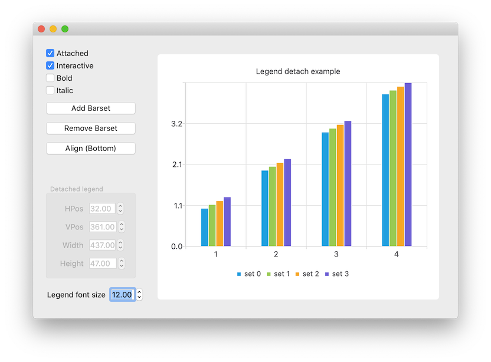
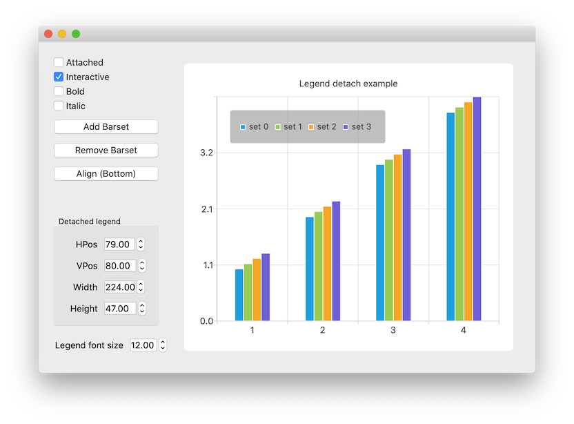

Detaching and Attaching Legends
Note: This is part of the Charts with Widgets Gallery example.
By default, the chart draws the legend inside the same graphics view the chart is contained within. In some cases, the user may want to draw the legend somewhere else. To make this possible, the legend can be detached from the chart. Detaching means that the legend is no longer fixed to an edge of the chart, and the chart no longer controls the legend's layout. Instead, the legend geometry is controlled by the user, allowing free control of the location and size of the legend. This can be floating atop the content of the chart, or even drawn in a different graphics scene. The behavior of the legend can be tested by running this example.
In this example we show a bar series, allowing bar sets to be added or removed interactively. The legend reflects the changes in series as bar sets are added and/or removed. The attachment of the legend, its alignment, and its ability to be moved and resized can be controlled using methods in QLegend.
When the legend is detached, it can be resized and positioned freely. If the interactive feature of the legend is enabled, the legend can be freely dragged and resized by the user. If the user drags the legend off of any side of the chart, it will automatically re-attach to that side of the chart.


Here we turn the legend visible and set its alignment to the bottom of the chart.
m_chart->legend()->setVisible(true); m_chart->legend()->setAlignment(Qt::AlignBottom);
This snippet shows how to detach the legend from the chart.
legend->detachFromChart();
Here we reattach the legend to the chart. The background is turned invisible.
legend->attachToChart();
Here we connect to the signal emitted when the legend is detached or attached, turning its background on when detached and off when attached. This makes it easier to see how the items inside the legend are arranged when it is detached.
connect(legend, &QLegend::attachedToChartChanged, [legend, this](bool attachedToChart) { m_toggleAttachedButton->setChecked(attachedToChart); legend->setBackgroundVisible(!attachedToChart); m_geometrySettings->setDisabled(attachedToChart); });
This shows how to make the legend interactive to the user using a pointing device such as a mouse.
legend->setInteractive(true);
This shows how we set the detached legend dimensions if the legend is not interactive. After setting the new values, we call update to show changes on screen.
QRectF geom = m_chart->legend()->geometry();
if (qFuzzyCompare(geom.x(), m_legendPosX->value())
&& qFuzzyCompare(geom.y(), m_legendPosY->value())
&& qFuzzyCompare(geom.width(), m_legendWidth->value())
&& qFuzzyCompare(geom.height(), m_legendHeight->value()))
return;
m_chart->legend()->setGeometry(QRectF(m_legendPosX->value(),
m_legendPosY->value(),
m_legendWidth->value(),
m_legendHeight->value()));
m_chart->legend()->update();